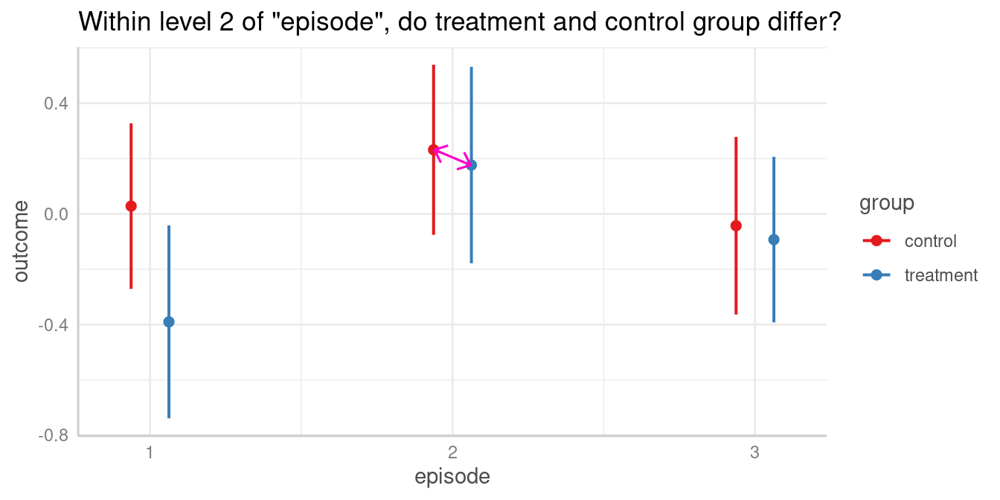
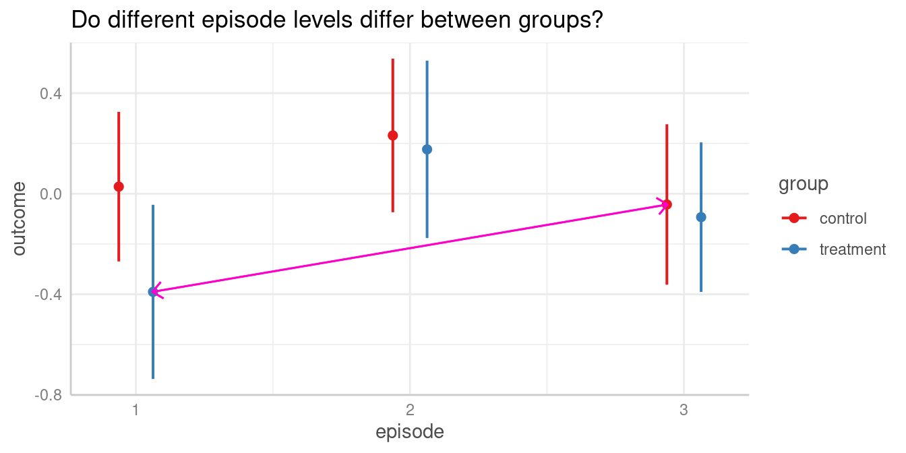
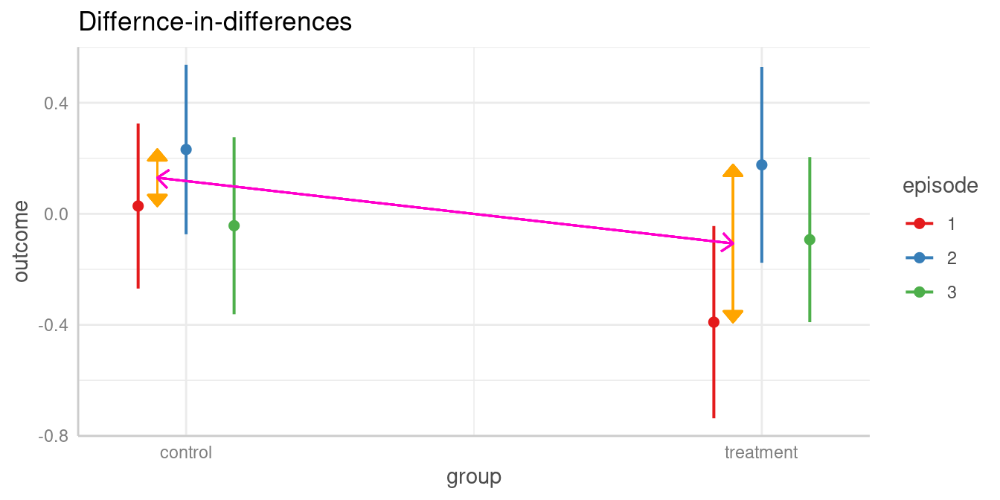
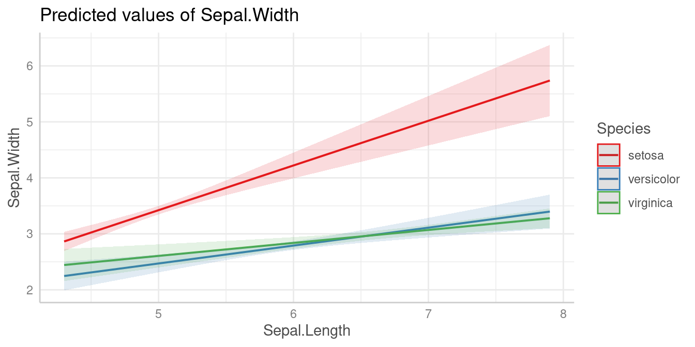
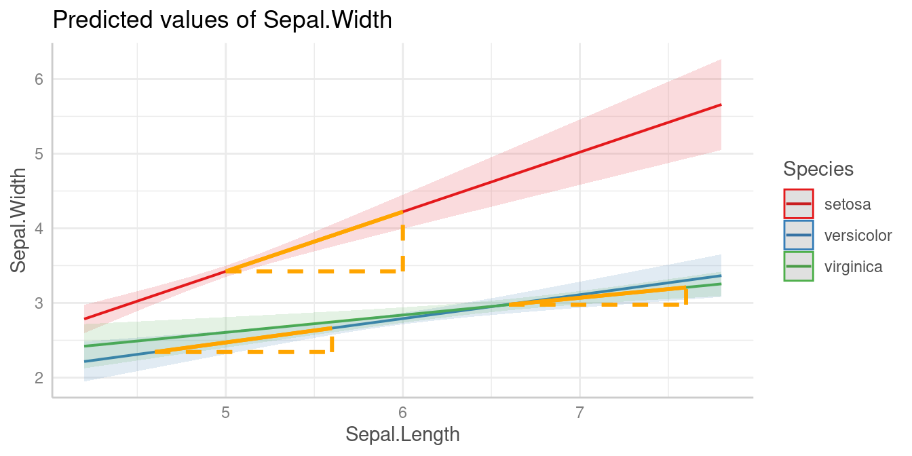
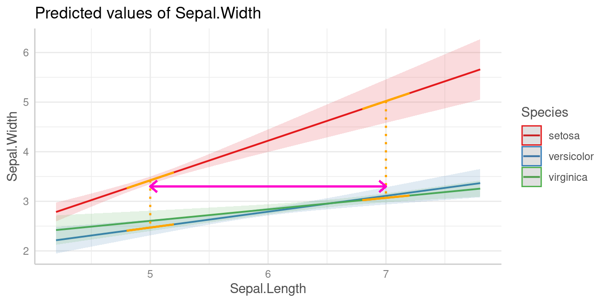
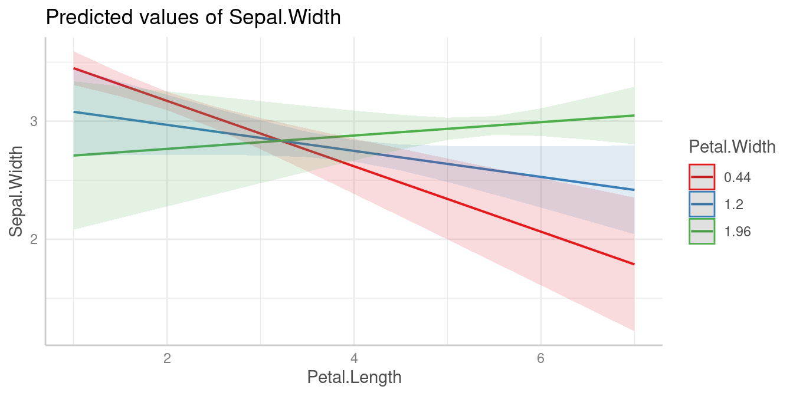

Slopes, Contrasts and Pairwise Comparisons"
Daniel Lüdecke
2023-02-19
Source:vignettes/introduction_comparisons.Rmd
introduction_comparisons.RmdHypothesis testing for categorical predictors
A reason to compute adjusted predictions (or estimated marginal means) is to help understanding the relationship between predictors and outcome of a regression model. In particular for more complex models, for example, complex interaction terms, it is often easier to understand the associations when looking at adjusted predictions instead of the raw table of regression coefficients.
The next step, which often follows this, is to see if there are statistically significant differences. These could be, for example, differences between groups, i.e. between the levels of categorical predictors or whether trends differ significantly from each other.
The ggeffects package provides a function,
hypothesis_test(), which does exactly this: testing
differences of adjusted predictions for statistical significance. This
is usually called contrasts or (pairwise) comparisons.
This vignette shows some examples how to use the
hypothesis_test() function and how to test wheter
differences in predictions are statistically significant.
Within episode, do levels differ?
We start with a toy example, where we have a linear model with two categorical predictors. No interaction is involved for now.
We display a simple table of regression coefficients, created with
model_parameters() from the parameters
package.
library(ggeffects)
library(parameters)
library(ggplot2)
set.seed(123)
n <- 200
d <- data.frame(
outcome = rnorm(n),
group = as.factor(sample(c("treatment", "control"), n, TRUE)),
episode = as.factor(sample(1:3, n, TRUE)),
sex = as.factor(sample(c("female", "male"), n, TRUE, prob = c(.4, .6)))
)
model1 <- lm(outcome ~ group + episode, data = d)
model_parameters(model1)
#> Parameter | Coefficient | SE | 95% CI | t(196) | p
#> -----------------------------------------------------------------------
#> (Intercept) | -0.08 | 0.13 | [-0.33, 0.18] | -0.60 | 0.552
#> group [treatment] | -0.17 | 0.13 | [-0.44, 0.09] | -1.30 | 0.197
#> episode [2] | 0.36 | 0.16 | [ 0.03, 0.68] | 2.18 | 0.031
#> episode [3] | 0.10 | 0.16 | [-0.22, 0.42] | 0.62 | 0.538Predictions
Let us look at the adjusted predictions.
mydf <- ggpredict(model1, "episode")
mydf
#> # Predicted values of outcome
#>
#> episode | Predicted | 95% CI
#> -----------------------------------
#> 1 | -0.08 | [-0.33, 0.17]
#> 2 | 0.28 | [ 0.03, 0.54]
#> 3 | 0.02 | [-0.24, 0.28]
#>
#> Adjusted for:
#> * group = control
plot(mydf)
We now see that, for instance, the predicted outcome when
espisode = 2 is 0.28.
Pairwise comparisons
We could now ask whether the predicted outcome for
episode = 1 is significantly different from the predicted
outcome at episode = 2.

To do this, we use the hypothesis_test() function. This
function, like ggpredict(), accepts the model object as
first argument, followed by the focal predictors of interest,
i.e. the variables of the model for which contrasts or pairwise
comparisons should be calculated.
By default, when all focal terms are categorical, a pairwise
comparison is performed. You can specify other hypothesis tests as well,
using the test argument (which defaults to
"pairwise", see ?hypothesis_test). For now, we
go on with the simpler example of contrasts or pairwise comparisons.
hypothesis_test(model1, "episode") # argument `test` defaults to "pairwise"
#> # Pairwise comparisons
#>
#> episode | Contrast | 95% CI | p
#> -------------------------------------------
#> 1-2 | -0.36 | [-0.68, -0.04] | 0.030
#> 1-3 | -0.10 | [-0.41, 0.22] | 0.538
#> 2-3 | 0.26 | [-0.06, 0.58] | 0.110For our quantity of interest, the contrast between episode 1-2, we
see the value -0.36, which is exactly the difference between the
predicted outcome for episode = 1 (-0.08) and
episode = 2 (0.28). The related p-value is 0.03, indicating
that the difference between the predicted values of our outcome at these
two levels of the factor episode is indeed statistically
significant.
In this simple example, the contrasts of both
episode = 2 and episode = 3 to
episode = 1 equals the coefficients of the regression table
above (same applies to the p-values), where the coefficients refer to
the difference between the related parameter of episode and
its reference level, episode = 1.
To avoid specifying all arguments used in a call to
ggpredict() again, we can also pass the objects returned by
ggpredict() directly into
hypothesis_test().
pred <- ggpredict(model1, "episode")
hypothesis_test(pred)
#> # Pairwise comparisons
#>
#> episode | Contrast | 95% CI | p
#> -------------------------------------------
#> 1-2 | -0.36 | [-0.68, -0.04] | 0.030
#> 1-3 | -0.10 | [-0.41, 0.22] | 0.538
#> 2-3 | 0.26 | [-0.06, 0.58] | 0.110Does same level of episode differ between groups?
The next example includes a pairwise comparison of an interaction between two categorical predictors.
model2 <- lm(outcome ~ group * episode, data = d)
model_parameters(model2)
#> Parameter | Coefficient | SE | 95% CI | t(194) | p
#> -------------------------------------------------------------------------------------
#> (Intercept) | 0.03 | 0.15 | [-0.27, 0.33] | 0.18 | 0.853
#> group [treatment] | -0.42 | 0.23 | [-0.88, 0.04] | -1.80 | 0.074
#> episode [2] | 0.20 | 0.22 | [-0.23, 0.63] | 0.94 | 0.350
#> episode [3] | -0.07 | 0.22 | [-0.51, 0.37] | -0.32 | 0.750
#> group [treatment] × episode [2] | 0.36 | 0.33 | [-0.29, 1.02] | 1.09 | 0.277
#> group [treatment] × episode [3] | 0.37 | 0.32 | [-0.27, 1.00] | 1.14 | 0.254Predictions
First, we look at the predicted values of outcome for all combinations of the involved interaction term.
mydf <- ggpredict(model2, c("episode", "group"))
mydf
#> # Predicted values of outcome
#>
#> # group = control
#>
#> episode | Predicted | 95% CI
#> -----------------------------------
#> 1 | 0.03 | [-0.27, 0.33]
#> 2 | 0.23 | [-0.07, 0.54]
#> 3 | -0.04 | [-0.36, 0.28]
#>
#> # group = treatment
#>
#> episode | Predicted | 95% CI
#> ------------------------------------
#> 1 | -0.39 | [-0.74, -0.04]
#> 2 | 0.18 | [-0.18, 0.53]
#> 3 | -0.09 | [-0.39, 0.20]
plot(mydf)
Pairwise comparisons
We could now ask whether the predicted outcome for
episode = 2 is significantly different depending on the
level of group? In other words, do the groups
treatment and control differ when
episode = 2?

Again, to answer this question, we calculate all pairwise comparisons, i.e. the comparison (or test for differences) between all combinations of our focal predictors. The focal predictors we’re interested here are our two variables used for the interaction.
# we want "episode = 2-2" and "group = control-treatment"
hypothesis_test(model2, c("episode", "group"))
#> # Pairwise comparisons
#>
#> episode | group | Contrast | 95% CI | p
#> -----------------------------------------------------------------
#> 1-2 | control-control | -0.20 | [-0.63, 0.22] | 0.349
#> 1-3 | control-control | 0.07 | [-0.37, 0.51] | 0.750
#> 1-1 | control-treatment | 0.42 | [-0.04, 0.87] | 0.072
#> 1-2 | control-treatment | -0.15 | [-0.61, 0.31] | 0.529
#> 1-3 | control-treatment | 0.12 | [-0.30, 0.54] | 0.572
#> 2-3 | control-control | 0.27 | [-0.17, 0.72] | 0.223
#> 2-1 | control-treatment | 0.62 | [ 0.16, 1.08] | 0.008
#> 2-2 | control-treatment | 0.06 | [-0.41, 0.52] | 0.816
#> 2-3 | control-treatment | 0.32 | [-0.10, 0.75] | 0.135
#> 3-1 | control-treatment | 0.35 | [-0.12, 0.82] | 0.148
#> 3-2 | control-treatment | -0.22 | [-0.69, 0.26] | 0.366
#> 3-3 | control-treatment | 0.05 | [-0.39, 0.49] | 0.821
#> 1-2 | treatment-treatment | -0.57 | [-1.06, -0.07] | 0.025
#> 1-3 | treatment-treatment | -0.30 | [-0.75, 0.16] | 0.202
#> 2-3 | treatment-treatment | 0.27 | [-0.19, 0.73] | 0.252For our quantity of interest, the contrast between groups
treatment and control when
episode = 2 is 0.06. We find this comparison in row 8 of
the above output.
As we can see, hypothesis_test() returns pairwise
comparisons of all possible combinations of factor levels from our focal
variables. If we’re only interested in a very specific comparison, we
could directly formulate this comparison as test. To
achieve this, we first need to create an overview of the adjusted
predictions, which we get from ggpredict() or
hypothesis_test(test = NULL).
# adjusted predictions, formatted table
ggpredict(model2, c("episode", "group"))
#> # Predicted values of outcome
#>
#> # group = control
#>
#> episode | Predicted | 95% CI
#> -----------------------------------
#> 1 | 0.03 | [-0.27, 0.33]
#> 2 | 0.23 | [-0.07, 0.54]
#> 3 | -0.04 | [-0.36, 0.28]
#>
#> # group = treatment
#>
#> episode | Predicted | 95% CI
#> ------------------------------------
#> 1 | -0.39 | [-0.74, -0.04]
#> 2 | 0.18 | [-0.18, 0.53]
#> 3 | -0.09 | [-0.39, 0.20]
# adjusted predictions, compact table
hypothesis_test(model2, c("episode", "group"), test = NULL)
#> episode | group | Predicted | 95% CI | p
#> --------------------------------------------------------
#> 1 | control | 0.03 | [-0.27, 0.33] | 0.853
#> 2 | control | 0.23 | [-0.07, 0.54] | 0.137
#> 3 | control | -0.04 | [-0.36, 0.28] | 0.792
#> 1 | treatment | -0.39 | [-0.74, -0.04] | 0.027
#> 2 | treatment | 0.18 | [-0.18, 0.53] | 0.327
#> 3 | treatment | -0.09 | [-0.39, 0.20] | 0.539In the above output, each row is considered as one coefficient of
interest. Our groups we want to include in our comparison are rows two
(group = control and episode = 2) and five
(group = treatment and episode = 2), so our
“quantities of interest” are b2 and b5. Our
null hypothesis we want to test is whether both predictions are equal,
i.e. test = "b2 = b5". We can now calculate the desired
comparison directly:
# compute specific contrast directly
hypothesis_test(model2, c("episode", "group"), test = "b2 = b5")
#> Hypothesis | Contrast | 95% CI | p
#> ---------------------------------------------
#> b2=b5 | 0.06 | [-0.41, 0.52] | 0.816
#>
#> Tested hypothesis: episode[2],group[control] = episode[2],group[treatment]The reason for this specific way of specifying the test
argument is because hypothesis_test() is a small,
convenient wrapper around predictions() and
slopes() of the great marginaleffects
package. Thus, test is just passed to the hypothesis
argument of those functions.
Do different episode levels differ between groups?
We can repeat the steps shown above to test any combination of group levels for differences.
Pairwise comparisons
For instance, we could now ask whether the predicted outcome for
episode = 1 in the treatment group is
significantly different from the predicted outcome for
episode = 3 in the control group.

The contrast we are interested in is between episode = 1
in the treatment group and episode = 3 in the
control group. These are the predicted values in rows three
and four (c.f. above table of predicted values), thus we
test whether "b4 = b3".
hypothesis_test(model2, c("episode", "group"), test = "b4 = b3")
#> Hypothesis | Contrast | 95% CI | p
#> ---------------------------------------------
#> b4=b3 | -0.35 | [-0.82, 0.12] | 0.148
#>
#> Tested hypothesis: episode[1],group[treatment] = episode[3],group[control]Another way to produce this pairwise comparison, we can reduce the
table of predicted values by providing specific
values or levels in the terms argument:
ggpredict(model2, c("episode [1,3]", "group"))
#> # Predicted values of outcome
#>
#> # group = control
#>
#> episode | Predicted | 95% CI
#> -----------------------------------
#> 1 | 0.03 | [-0.27, 0.33]
#> 3 | -0.04 | [-0.36, 0.28]
#>
#> # group = treatment
#>
#> episode | Predicted | 95% CI
#> ------------------------------------
#> 1 | -0.39 | [-0.74, -0.04]
#> 3 | -0.09 | [-0.39, 0.20]episode = 1 in the treatment group and
episode = 3 in the control group refer now to
rows two and three, thus we also can obtain the desired comparison this
way:
pred <- ggpredict(model2, c("episode [1,3]", "group"))
hypothesis_test(pred, test = "b3 = b2")
#> Hypothesis | Contrast | 95% CI | p
#> ---------------------------------------------
#> b3=b2 | -0.35 | [-0.82, 0.12] | 0.148
#>
#> Tested hypothesis: episode[1],group[treatment] = episode[3],group[control]Does difference between two levels of episode in the control group differ from difference of same two levels in the treatment group?
The test argument also allows us to compare
difference-in-differences. For example, is the difference between two
episode levels in one group significantly different from the difference
of the same two episode levels in the other group?

As a reminder, we look at the table of predictions again:
hypothesis_test(model2, c("episode", "group"), test = NULL)
#> episode | group | Predicted | 95% CI | p
#> --------------------------------------------------------
#> 1 | control | 0.03 | [-0.27, 0.33] | 0.853
#> 2 | control | 0.23 | [-0.07, 0.54] | 0.137
#> 3 | control | -0.04 | [-0.36, 0.28] | 0.792
#> 1 | treatment | -0.39 | [-0.74, -0.04] | 0.027
#> 2 | treatment | 0.18 | [-0.18, 0.53] | 0.327
#> 3 | treatment | -0.09 | [-0.39, 0.20] | 0.539The first difference of episode levels 1 and 2 in the control group
refer to rows one and two in the above table (b1 and
b2). The difference for the same episode levels in the
treatment group refer to the difference between rows four and five
(b4 and b5). Thus, we have
b1 - b2 and b4 - b5, and our null hypothesis
is that these two differences are equal:
test = "(b1 - b2) = (b4 - b5)".
hypothesis_test(model2, c("episode", "group"), test = "(b1 - b2) = (b4 - b5)")
#> Hypothesis | Contrast | 95% CI | p
#> --------------------------------------------------
#> (b1-b2)=(b4-b5) | 0.36 | [-0.29, 1.02] | 0.276
#>
#> Tested hypothesis: (episode[1],group[control] - episode[2],group[control]) = (episode[1],group[treatment] - episode[2],group[treatment])Let’s replicate this step-by-step:
- Predicted value of outcome for
episode = 1in the control group is 0.03. - Predicted value of outcome for
episode = 2in the control group is 0.23. - The first difference is -0.2
- Predicted value of outcome for
episode = 1in the treatment group is -0.39. - Predicted value of outcome for
episode = 2in the treatment group is 0.18. - The second difference is -0.57
- Our quantity of interest is the difference between these two differences, which is 0.36. This difference is not statistically significant (p = 0.276).
Hypothesis testing for slopes of numeric predictors
For numeric focal terms, it is possible to conduct hypothesis testing for slopes, or the linear trend of these focal terms.
Let’s start with a simple example again.
data(iris)
m <- lm(Sepal.Width ~ Sepal.Length + Species, data = iris)
model_parameters(m)
#> Parameter | Coefficient | SE | 95% CI | t(146) | p
#> ----------------------------------------------------------------------------
#> (Intercept) | 1.68 | 0.24 | [ 1.21, 2.14] | 7.12 | < .001
#> Sepal Length | 0.35 | 0.05 | [ 0.26, 0.44] | 7.56 | < .001
#> Species [versicolor] | -0.98 | 0.07 | [-1.13, -0.84] | -13.64 | < .001
#> Species [virginica] | -1.01 | 0.09 | [-1.19, -0.82] | -10.80 | < .001We can already see from the coefficient table that the slope for
Sepal.Length is 0.35. We will thus find the same increase
for the predicted values in our outcome when our focal variable,
Sepal.Length increases by one unit.
ggpredict(m, "Sepal.Length [4,5,6,7]")
#> # Predicted values of Sepal.Width
#>
#> Sepal.Length | Predicted | 95% CI
#> ---------------------------------------
#> 4 | 3.08 | [2.95, 3.20]
#> 5 | 3.43 | [3.35, 3.51]
#> 6 | 3.78 | [3.66, 3.90]
#> 7 | 4.13 | [3.93, 4.32]
#>
#> Adjusted for:
#> * Species = setosaConsequently, in this case of a simple slope, we see the same result
for the hypothesis test for the linar trend of
Sepal.Length:
hypothesis_test(m, "Sepal.Length")
#> # Linear trend for Sepal.Length
#>
#> Slope | 95% CI | p
#> -----------------------------
#> 0.35 | [0.26, 0.44] | < .001Is the linear trend of Sepal.Length significant for the
different levels of Species?
Let’s move on to a more complex example with an interaction between a numeric and categorical variable.
Predictions
m <- lm(Sepal.Width ~ Sepal.Length * Species, data = iris)
pred <- ggpredict(m, c("Sepal.Length", "Species"))
plot(pred)
Slopes by group
We can see that the slope of Sepal.Length is different
within each group of Species.

Since we don’t want to do pairwise comparisons, we set
test = NULL. In this case, when interaction terms are
included, the linear trend (slope) for our numeric focal
predictor, Sepal.Length, is tested for each level of
Species.
hypothesis_test(m, c("Sepal.Length", "Species"), test = NULL)
#> # Linear trend for Sepal.Length
#>
#> Species | Slope | 95% CI | p
#> ------------------------------------------
#> setosa | 0.80 | [0.58, 1.01] | < .001
#> versicolor | 0.32 | [0.17, 0.47] | < .001
#> virginica | 0.23 | [0.11, 0.35] | < .001As we can see, each of the three slopes is significant, i.e. we have “significant” linear trends.
Pairwise comparisons
Next question could be whether or not linear trends differ
significantly between each other, i.e. we test differences in slopes,
which is a pairwise comparison between slopes. To do this, we use the
default for test, which is "pairwise".
hypothesis_test(m, c("Sepal.Length", "Species"))
#> # Linear trend for Sepal.Length
#>
#> Species | Contrast | 95% CI | p
#> --------------------------------------------------------
#> setosa-versicolor | 0.48 | [ 0.22, 0.74] | < .001
#> setosa-virginica | 0.57 | [ 0.32, 0.81] | < .001
#> versicolor-virginica | 0.09 | [-0.10, 0.28] | 0.366The linear trend of Sepal.Length within
setosa is significantly different from the linear trend of
versicolor and also from virginica. The
difference of slopes between virginica and
versicolor is not statistically significant (p =
0.366).
Is the difference linear trends of Sepal.Length in
between two groups of Species significantly different from
the difference of two linear trends between two other groups?
Similar to the example for categorical predictors, we can also test a
difference-in-differences for this example. For instance, is the
difference of the slopes from Sepal.Length between
setosa and versicolor different from the
slope-difference for the groups setosa and
vigninica?
This difference-in-differences we’re interested in is again indicated by the purple arrow in the below plot.

Let’s look at the different slopes separately first, i.e. the slopes
of Sepal.Length by levels of Species:
hypothesis_test(m, c("Sepal.Length", "Species"), test = NULL)
#> # Linear trend for Sepal.Length
#>
#> Species | Slope | 95% CI | p
#> ------------------------------------------
#> setosa | 0.80 | [0.58, 1.01] | < .001
#> versicolor | 0.32 | [0.17, 0.47] | < .001
#> virginica | 0.23 | [0.11, 0.35] | < .001The first difference of slopes we’re interested in is the one between
setosa (0.8) and versicolor (0.32),
i.e. b1 - b2 (=0.48). The second difference is between
levels setosa (0.8) and virginica (0.23),
which is b1 - b3 (=0.57). We test the null hypothesis that
(b1 - b2) = (b1 - b3).
hypothesis_test(m, c("Sepal.Length", "Species"), test = "(b1 - b2) = (b1 - b3)")
#> Hypothesis | Contrast | 95% CI | p
#> --------------------------------------------------
#> (b1-b2)=(b1-b3) | -0.09 | [-0.28, 0.10] | 0.366
#>
#> Tested hypothesis: (Species[setosa] - Species[versicolor]) = (Species[setosa] - Species[virginica])The difference between the two differences is (-0.09) and not statistically significant (p = 0.366).
Is the linear trend of Sepal.Length significant at
different values of another numeric predictor?
The last example is an interaction between two numeric predictors. In
case of interaction terms, adjusted predictions are usually shown at
representative values. If a numeric variable is specified as
second or third interaction term, representative values (see
values_at()) are typically mean +/- SD.
In the next example, we have Petal.Width as second
interaction term, thus we see the predicted values of
Sepal.Width (our outcome) for Petal.Length at
three different, representative values of Petal.Width: Mean
(1.2), 1 SD above the mean (1.96) and 1 SD below the mean (0.44).
Predictions
m <- lm(Sepal.Width ~ Petal.Length * Petal.Width, data = iris)
pred <- ggpredict(m, c("Petal.Length", "Petal.Width"))
plot(pred)
For hypothesis_test(), these three values (mean, +1 SD
and -1 SD) work in the same way as if Petal.Width was a
categorical predictor with three levels.
First, we want to see at which value of Petal.Width the
slopes of Petal.Length are significant. We do no pairwise
comparison here, hence we set test = NULL.
hypothesis_test(pred, test = NULL)
#> # Linear trend for Petal.Length
#>
#> Petal.Width | Slope | 95% CI | p
#> ---------------------------------------------
#> 0.44 | -0.28 | [-0.39, -0.16] | < .001
#> 1.20 | -0.11 | [-0.23, 0.01] | 0.073
#> 1.96 | 0.06 | [-0.09, 0.20] | 0.436
# same as:
# hypothesis_test(m, c("Petal.Length", "Petal.Width"), test = NULL)Pairwise comparisons
The results of the pairwise comparison are shown below. These tell us that all linear trends (slopes) are significantly different from each other, i.e. the slope of the green line is significantly different from the slope of the red line, and so on.
hypothesis_test(pred)
#> # Linear trend for Petal.Length
#>
#> Petal.Width | Contrast | 95% CI | p
#> ------------------------------------------------
#> 0.44-1.2 | -0.17 | [-0.21, -0.12] | < .001
#> 0.44-1.96 | -0.33 | [-0.43, -0.24] | < .001
#> 1.2-1.96 | -0.17 | [-0.21, -0.12] | < .001Conclusion
Thanks to the great marginaleffects package, it is now possible to have a powerful function in ggeffects that allows to perform the next logical step after calculating adjusted predictions and to conduct hypothesis tests for contrasts and pairwise comparisons.
While the current implementation in hypothesis_test()
already covers many common use cases for testing contrasts and pairwise
comparison, there still might be the need for more sophisticated
comparisons. In this case, I recommend using the marginaleffects
package directly. Some further related recommended readings are the
vignettes about Comparisons
or Hypothesis
Tests, Equivalence Tests, and Custom Contrasts.